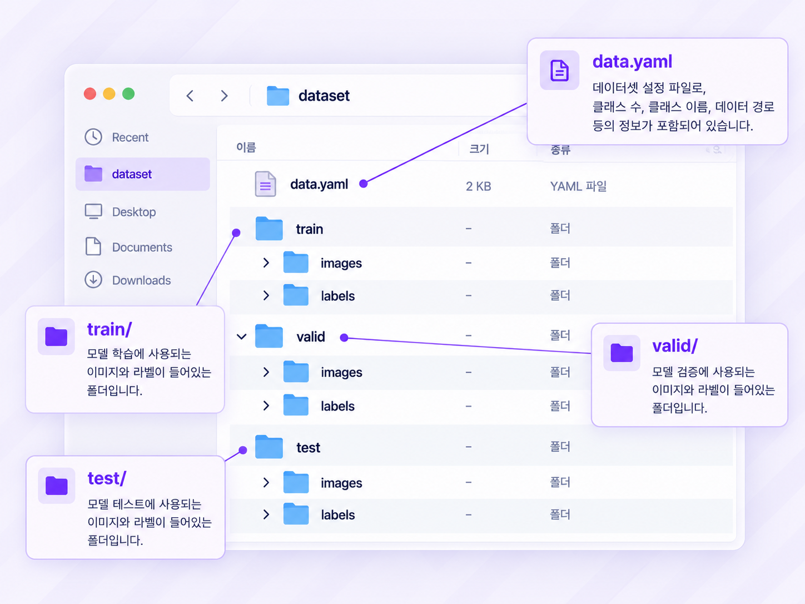
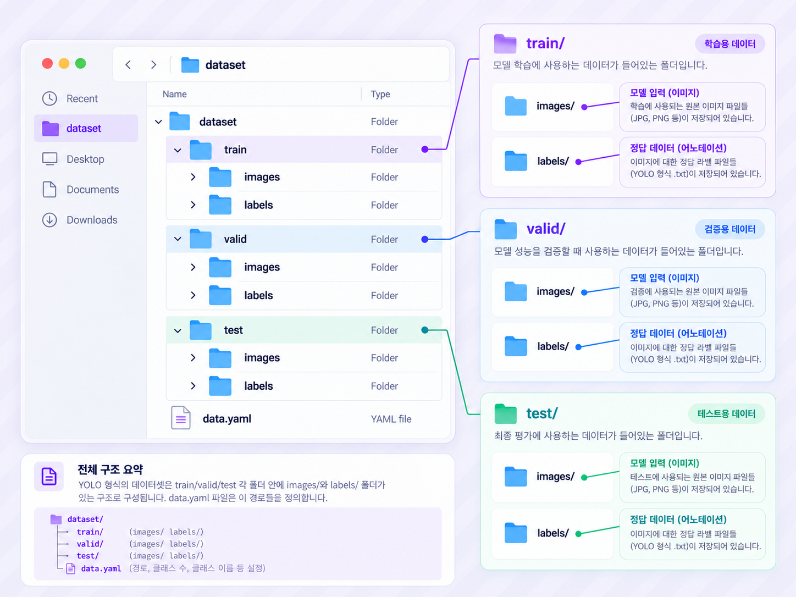
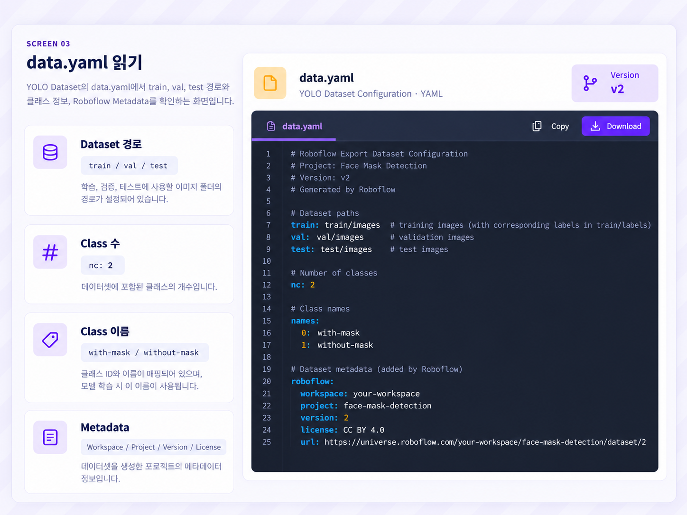
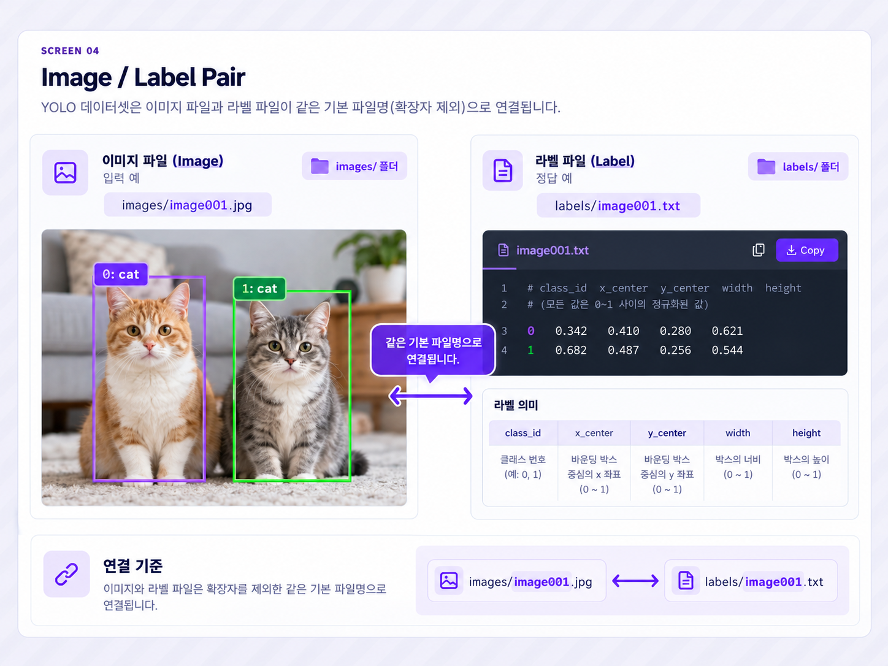

ROBOFLOW · COMPUTER VISION DATASET
Dataset Pipeline · YOLO Training Data Contract
Roboflow 08. YOLO Dataset 구조
data.yaml · train/images · train/labels · valid · test · nc · names
YOLO Dataset 구조는 단순한 Folder 정리가 아닙니다. images는 Model 입력, labels는 Bounding Box와 Class 정답, data.yaml은 Dataset 경로와 Class Schema를 설명하는 지도입니다. 이 세 요소의 연결이 정확해야 YOLO가 Dataset을 읽고 학습을 시작할 수 있습니다.
학습 목표
-
01
YOLO Dataset Root의 전체 Folder 구조를 설명한다.
-
02
data.yaml이 Dataset 전체 지도 역할을 한다는 것을 설명한다.
-
03
train, valid, test의 역할을 구분한다.
-
04
images와 labels가 각각 Model 입력과 정답이라는 것을 설명한다.
-
05
Image 파일과 Label 파일의 대응 관계를 확인한다.
-
06
nc와 names를 이용해 Class Schema를 해석한다.
-
07
Roboflow Metadata를 이용해 Dataset 출처와 Version을 추적한다.
-
08
YOLO Training 전에 경로·Class·Image·Label 구조를 검수한다.
교안 직접 구조: train·val·test 경로 → nc·names → Roboflow Metadata → train/images → train/labels → YOLO Annotation .txt
01 · LESSON GOAL
YOLO가 Dataset을 읽는 규칙 이해하기
이번 단원의 목표는 Folder 이름을 암기하는 것이 아니라, YOLO가 어떤 파일을 입력으로 읽고, 어떤 파일을 정답으로 사용하며, data.yaml을 통해 그 위치와 Class를 어떻게 해석하는지 이해하는 것입니다.
Export된 파일 묶음
- Folder 이름만 보임
- YAML 항목 의미 불명확
- Image·Label 연결 미확인
- Training 준비 상태 미확인
Training-ready Dataset
- Dataset 경로 해석
- Class Schema 해석
- Image·Label Pair 확인
- YOLO Training 준비 판단
Folder와 파일 이름이 정해진 규칙을 따르지 않으면 Model이 Image와 정답을 정상적으로 연결하지 못할 수 있습니다.
02 · PIPELINE POSITION
Roboflow 전체 Workflow에서의 위치
이번 단원은 Model Architecture를 만드는 단계가 아니라, Model이 학습할 Image와 정답 구조를 최종 확인하는 단계입니다.
03 · CORE CONCEPTS
YOLO Dataset 핵심 용어
| 용어 | 의미 | 핵심 질문 |
|---|---|---|
| Dataset Root | data.yaml과 Split Folder를 포함하는 최상위 위치 | Dataset은 어디에서 시작하는가? |
| data.yaml | 경로·Class·Metadata를 정의하는 Dataset 설정 파일 | YOLO는 Dataset을 어떻게 찾는가? |
| train | Model Weight 학습용 Dataset | Model이 무엇을 반복 학습하는가? |
| valid | 학습 중 검증용 Dataset Folder | Model이 일반화되고 있는가? |
| test | 최종 성능 평가용 Dataset | 완성된 Model의 성능은 어떤가? |
| images | Model 입력 Image Folder | Model에 무엇을 넣는가? |
| labels | Bounding Box와 Class 정답 Folder | 객체가 어디에 있고 무엇인가? |
| nc | Number of Classes | 구분할 객체 종류는 몇 개인가? |
| names | Class 이름과 ID 순서 | 각 Class 번호는 무엇을 의미하는가? |
| Metadata | Workspace·Project·Version·License 정보 | 이 Dataset은 어디에서 왔는가? |
YOLO Dataset
=
data.yaml
+
images
+
labels
+
Class Schema
04 · VISUAL UNDERSTANDING
data.yaml에서 Image와 Label까지
data.yaml
- train 경로
- val 경로
- test 경로
- nc
- names
Input Data
Image Input
Target Data
Box + Class
SUPPLEMENT · X와 y 연결은 이해를 돕기 위한 보충 설명
05 · SCREEN WALKTHROUGH
Export 결과 화면 따라가기
각 화면에서 어디를 확인하는가 → 무엇을 의미하는가 → 다음에 무엇을 검수하는가 를 함께 정리합니다.

Dataset Root 확인
- 최상위 파일
- data.yaml
- Split Folder
- train / valid / test
- 왜?
- Dataset의 시작 위치와 전체 구조를 확인하기 위해
- 다음
- 각 Split의 images / labels 확인

Folder Tree 확인
- Model 입력
- images
- Model 정답
- labels
- 핵심
- Image와 Annotation을 Split별로 함께 관리
- 검수
- Folder 존재 여부와 파일 수 확인

data.yaml 읽기
- Dataset 경로
- train / val / test
- Class 수
- nc: 2
- Class 이름
- with-mask / without-mask
- Metadata
- Workspace / Project / Version / License

Image / Label Pair
- 입력 예
- images/image001.jpg
- 정답 예
- labels/image001.txt
- 연결 기준
- 같은 기본 파일명
- 범위
- 일반적인 YOLO 구조 보충
교안은 data.yaml의 경로·Class·Metadata와 train/images·train/labels의 역할을 직접 설명합니다. 전체 valid/test labels Tree와 파일명 Pair는 사용자 학습 구조 및 일반적인 YOLO 구조를 반영했습니다.
06 · DATASET ROOT
YOLO Dataset 전체 Folder Tree
사용자가 제시한 전체 YOLO Dataset 학습 구조
dataset/
│
├─ train/
│ ├─ images/
│ │ ├─ mask_001.jpg
│ │ ├─ mask_002.jpg
│ │ └─ mask_003.jpg
│ │
│ └─ labels/
│ ├─ mask_001.txt
│ ├─ mask_002.txt
│ └─ mask_003.txt
│
├─ valid/
│ ├─ images/
│ │ ├─ mask_101.jpg
│ │ └─ mask_102.jpg
│ │
│ └─ labels/
│ ├─ mask_101.txt
│ └─ mask_102.txt
│
├─ test/
│ ├─ images/
│ │ └─ mask_201.jpg
│ │
│ └─ labels/
│ └─ mask_201.txt
│
└─ data.yaml
dataset/
Dataset Root
Dataset 전체의 기준 위치
train/
Training
Model Weight 학습
valid/
Validation
학습 중 일반화 확인
test/
Test
최종 평가
data.yaml
Dataset Map
경로와 Class 설정
교안은 train/images와 train/labels를 직접 설명하고 data.yaml에서 valid/images와 test/images 경로를 보여 줍니다. valid/labels와 test/labels까지 포함한 전체 구조는 사용자가 제시한 학습 Tree와 일반적인 Object Detection 구조를 반영합니다.
07 · DATA.YAML
Dataset 전체를 설명하는 설정 파일
train: ../train/images
val: ../valid/images
test: ../test/images
nc: 2
names: ['with-mask', 'without-mask']
roboflow:
workspace: objectdetect-huyv4
project: find-mask-pkqpq
version: 1
license: CC BY 4.0
url: ...Dataset 경로
train
val
test
Class Schema
nc
names
Dataset Metadata
workspace
project
version
data.yaml
=
Dataset 경로
+
Class Schema
+
Version Metadata
08 · DATASET PATH
train · val · test 경로 읽기
train: ../train/images
Training Image 경로
Model Weight를 학습할 Image 위치입니다.
val: ../valid/images
Validation Image 경로
학습 중 Model 상태를 확인할 Image 위치입니다.
test: ../test/images
Test Image 경로
최종 성능 평가에 사용할 Image 위치입니다.
Validation 경로를 지정하는 설정 항목
실제 Dataset Folder 이름
../train/images
일반적인 파일 경로에서
..는 상위 Folder를 의미합니다.
실제 경로 해석 기준은 사용하는 YOLO Library와 실행 위치를 확인해야 합니다.
상대 경로는 주변 Dataset Folder 구조를 기준으로 하므로, YAML만 이동하면 train·valid·test를 찾지 못할 수 있습니다.
09 · IMAGES / LABELS
Model 입력과 Object Detection 정답
images
YOLO가 입력으로 읽는 Image 파일입니다.
labels
Bounding Box와 Class를 담은 Annotation 파일입니다.
교안은 images Folder의 파일을 원본 Image라고 표현하지만, Version 단계에서는 Preprocessing이 적용됩니다. Export Image가 Upload 원본과 Pixel 단위로 완전히 동일한지는 교안만으로 확정할 수 없습니다.
10 · IMAGE / LABEL PAIRING
같은 기본 파일명으로 입력과 정답 연결
SUPPLEMENT · 일반적인 YOLO 파일 대응 방식
train/images/mask_001.jpg
↕
train/labels/mask_001.txt
valid/images/mask_101.jpg
↕
valid/labels/mask_101.txt
test/images/mask_201.jpg
↕
test/labels/mask_201.txt
.jpg
.txt
mask_001.jpg
↕
mask_001.txt
mask_001.jpg
↕
mask01.txt
11 · YOLO LABEL FORMAT
Annotation `.txt` 내부 구조
SUPPLEMENT · 교안은 `.txt` 파일 생성까지만 직접 설명
class_id x_center y_center width height
0 0.512 0.438 0.214 0.376
1 0.270 0.510 0.180 0.420
0 0.780 0.460 0.150 0.350
class_id
객체 Class 번호
x_center
Box 중심 X 위치
y_center
Box 중심 Y 위치
width
Box 가로 크기
height
Box 세로 크기
한 Image 안에 객체가 여러 개라면 Label 파일에도 여러 줄이 존재할 수 있습니다.
정규화 좌표 개념
x_center
Box 중심 X Pixel ÷ Image Width
y_center
Box 중심 Y Pixel ÷ Image Height
width
Box Width Pixel ÷ Image Width
height
Box Height Pixel ÷ Image Height
위 구조는 일반적인 YOLO Object Detection Format을 설명한 것입니다. 실제 Export Format과 YOLO 구현에 따라 세부 규격을 확인해야 합니다.
12 · CLASS SCHEMA
nc와 names 연결
nc: 2
names:
- with-mask
- without-masknc: 2
names:
- with-mask
- without-mask
- incorrect-maskLabel 파일의 Class ID가 names의 Index와 연결될 수 있으므로, 순서를 변경하면 기존 Annotation의 의미가 달라질 수 있습니다.
13 · ROBOFLOW METADATA
Dataset 출처와 Version 추적
교안은 License Metadata를 보여 주지만, License의 구체적인 사용·배포 조건까지 설명하지 않습니다.
14 · TRAIN / VALID / TEST
Dataset Split의 역할
Model Weight 학습
Image와 Label을 반복해서 보며 Object Detection Pattern을 학습합니다.
학습 중 검증
학습 성능과 일반화 상태, Overfitting 가능성을 확인합니다.
최종 평가
학습과 설정 조정이 끝난 뒤 최종 Model 성능을 평가합니다.
Split 안에서 Image와 Label을 함께 유지
train/images/mask_001.jpg
↕
train/labels/mask_001.txt
train/images/mask_001.jpg
↕
valid/labels/mask_001.txt
Train에서 이미 본 장면이 Valid나 Test에 존재하면 평가 결과가 실제보다 좋아 보일 수 있습니다.
교안은 train, val, test 경로를 보여 주지만 각 Split의 비율과 분리 기준은 설명하지 않습니다.
15 · YOLO DATA LOADER
Training Program이 Dataset을 읽는 흐름
SUPPLEMENT · 일반적인 YOLO Dataset Loader 이해
Dataset 위치와 Class 구조
Model에 전달되는 Image
Loss 계산에 사용할 정답
Class ID 해석 규칙
16 · TRAINING READINESS
YOLO Training 전 Dataset 검수
1. Annotation 품질 검수
2. Folder 구조 검수
3. Image·Label·Class 검수
Dataset 경로·Class Schema·Image·Label 구조 검수가 끝난 상태
17 · COMMON MISTAKES
초보자가 자주 하는 실수
Class 이름 불일치
with-mask, with_mask, with mask처럼 같은 의미를 여러 Class로 만들지 않습니다.
Bounding Box 범위 오류
지나치게 크거나 작고 잘못된 위치의 Box도 그대로 Export될 수 있습니다.
객체 일부만 Annotation
누락된 객체는 Label 파일에 자동으로 추가되지 않습니다.
Annotation 누락과 Negative Image 혼동
객체가 없는 정상 Image인지 작업이 빠진 Image인지 구분해야 합니다.
Train / Valid / Test 역할 혼동
학습, 학습 중 검증, 최종 평가 역할을 구분합니다.
잘못된 Export Format 사용
사용하는 YOLO Library가 지원하는 Dataset 규격을 확인합니다.
data.yaml 경로 오류
YAML의 경로와 실제 Folder 위치가 일치해야 합니다.
data.yaml만 다른 위치로 이동
상대 경로의 기준이 바뀌어 Dataset을 찾지 못할 수 있습니다.
Folder 이름만 변경
valid를 validation으로 바꿨다면 YAML 경로도 검토해야 합니다.
val과 valid 혼동
val은 YAML Key이고 valid는 Folder 이름입니다.
images와 labels를 같은 Folder에 섞음
Model 입력과 Ground Truth를 역할별 Folder로 구분합니다.
Image와 Label 기본 파일명 불일치
같은 Sample은 일반적으로 같은 기본 파일명을 사용합니다.
nc와 names 개수 불일치
Class 개수와 Class 이름 목록 길이가 같아야 합니다.
names 순서를 임의로 변경
기존 Label Class ID의 의미가 바뀔 수 있습니다.
Class ID가 nc 범위를 벗어남
nc가 2라면 일반적인 0 기반 ID는 0과 1입니다.
YOLO Label 값을 Pixel 좌표로 해석
일반적인 YOLO 좌표는 정규화 값인 경우가 많습니다.
Label 한 줄의 값 개수를 잘못 수정
일반적인 Object Detection Label은 다섯 값을 사용합니다.
Split 간 동일 Image 중복
Validation과 Test 결과가 실제보다 좋아 보일 수 있습니다.
data.yaml만 있으면 준비 완료라고 생각
경로, Image·Label Pair, Class ID, 파일 손상도 확인해야 합니다.
License Metadata를 무시
Dataset 사용과 공유 전에 License 조건을 별도로 확인합니다.
18 · ERROR / STATUS READING
YOLO Dataset 구조 오류 읽기
첨부 교안에는 실제 YOLO Training 오류 메시지가 없습니다. 아래 표는 Dataset 구조 문제를 이해하기 위한 일반적인 보충 진단입니다.
| 증상 | 가능한 원인 | 먼저 확인할 내용 |
|---|---|---|
| data.yaml을 찾지 못함 | 잘못된 경로·압축 미해제 | Dataset Root와 YAML 위치 |
| Training Image를 찾지 못함 | train 경로 불일치 | train: ../train/images |
| Validation Image를 찾지 못함 | val·valid 혼동 | val: ../valid/images |
| Label 파일을 찾지 못함 | labels Folder·파일명 문제 | Image와 Label 기본 이름 |
| Class Index 범위 오류 | Class ID가 nc 이상 | nc·names·Label 첫 값 |
| nc와 names 불일치 | Class Schema 편집 오류 | nc와 names 항목 수 |
| YAML Syntax Error | 들여쓰기·콜론·괄호 오류 | 수동 수정 여부 |
| 특정 Image에서 Training 중단 | 손상 Image 가능성 | 해당 Image 직접 열기 |
| Image와 Label 수가 다름 | Negative Image·누락·삭제 | Project Annotation Policy |
19 · PRACTICAL CONNECTION
실무 Dataset 운영과 추적
SUPPLEMENT · 실무 운영 예시
Version을 포함한 Folder 관리
downloads/
└─ find-mask_v1_yolo_original.zip
datasets/
├─ find-mask_v1_yolo/
├─ find-mask_v2_yolo/
└─ find-mask_v3_yolo/Dataset Manifest 예시
- Project
- find-mask
- Roboflow Version
- 1
- Dataset Root
- find-mask_v1_yolo
- Classes
- 0 with-mask · 1 without-mask
- Train
- train/images · train/labels
- Valid
- valid/images · valid/labels
- Test
- test/images · test/labels
- Manual Changes
- none
Dataset Version과 Model Experiment 연결
자동 검증 대상
20 · INTERVIEW / REVIEW
면접 포인트
Q01. YOLO Dataset의 기본 구성은 무엇입니까?
data.yaml과 Train·Validation·Test Folder, 각 Split의 images와 labels로 구성됩니다.
Q02. data.yaml은 무엇입니까?
Dataset 경로, Class 수와 이름, Roboflow Version과 출처 Metadata를 정의하는 설정 파일입니다.
Q03. 교안의 Train 경로는 무엇입니까?
../train/images입니다.
Q04. 교안의 Validation 경로는 무엇입니까?
../valid/images입니다.
Q05. val과 valid는 어떻게 다릅니까?
val은 data.yaml의 Key이고, valid는 실제 Folder 이름입니다.
Q06. 교안의 Test 경로는 무엇입니까?
../test/images입니다.
Q07. images Folder에는 무엇이 있습니까?
Model 입력으로 사용할 Image 파일이 저장됩니다.
Q08. labels Folder에는 무엇이 있습니까?
Bounding Box와 Class를 표현한 YOLO Annotation `.txt`가 저장됩니다.
Q09. Image와 Label은 어떻게 연결됩니까?
일반적으로 확장자를 제외한 같은 기본 파일명을 사용합니다.
Q10. nc는 무엇입니까?
Number of Classes, 즉 Dataset의 Class 개수입니다.
Q11. 교안의 nc 값은 무엇입니까?
nc: 2입니다.
Q12. names는 무엇입니까?
Class 이름과 Class ID의 순서를 정의하는 목록입니다.
Q13. 교안의 Class 이름은 무엇입니까?
with-mask와 without-mask입니다.
Q14. 일반적인 YOLO Label 한 줄은 어떤 구조입니까?
class_id, x_center, y_center, width, height 구조입니다. 이는 일반적인 YOLO Format 보충입니다.
Q15. 한 Image에 객체가 여러 개 있으면 어떻게 됩니까?
일반적으로 객체 하나당 한 줄을 기록하므로 객체 수만큼 여러 줄이 존재할 수 있습니다.
Q16. nc와 names는 어떤 관계입니까?
nc는 Class 개수이며 names의 항목 수도 그 값과 일치해야 합니다.
Q17. names 순서가 중요한 이유는 무엇입니까?
Label 파일의 Class ID가 names의 Index와 연결될 수 있기 때문입니다.
Q18. Train / Valid / Test의 역할은 무엇입니까?
Train은 Model 학습, Valid는 학습 중 검증, Test는 최종 평가에 사용합니다.
Q19. roboflow.version은 무엇입니까?
어떤 Roboflow Dataset Version에서 Export했는지 나타내는 Metadata입니다.
Q20. data.yaml만 이동하면 왜 문제가 생길 수 있습니까?
상대 경로가 기존 Folder 구조를 기준으로 작성되어 있어 Image Folder를 찾지 못할 수 있기 때문입니다.
Q21. Image와 Label 수가 다르면 반드시 오류입니까?
항상 그렇지는 않습니다. Negative Image일 수도 있고 Annotation 누락일 수도 있으므로 Dataset 정책을 확인해야 합니다.
Q22. Dataset Folder가 있으면 Model Training도 끝난 것입니까?
아닙니다. Dataset 준비가 끝난 것이며 Model Weight 학습은 별도 단계입니다.
Q23. YOLO Training 전에 무엇을 확인해야 합니까?
YAML 경로, Folder 존재 여부, Image·Label 대응, nc·names 일치, Class ID 범위, 파일 손상, Split 중복을 확인합니다.
22 · SOURCE GUIDE
교안·사용자 구조·보충 내용 구분
교안 직접 내용
- train: ../train/images
- val: ../valid/images
- test: ../test/images
- nc: 2
- with-mask / without-mask
- Workspace / Project / Version
- License / URL
- train/images
- train/labels
- labels의 YOLO Annotation `.txt`
사용자가 제시한 구조
- dataset Root
- train/images
- train/labels
- valid/images
- valid/labels
- test/images
- test/labels
- data.yaml
이해·실무 보충
- Image·Label 파일명 Pair
- YOLO Label 내부 숫자 구조
- 좌표 정규화 개념
- Class ID와 names 연결
- Negative Image 처리
- Data Leakage
- 자동 Dataset Validation
- Dataset Manifest
YOLO Label의 세부 공식, Train / Valid / Test 비율, Negative Image 처리, Export Image와 Upload 원본의 Pixel 단위 관계, 상대 경로의 Library별 해석, License의 구체적인 법적 조건은 교안에 자세히 설명되어 있지 않습니다.